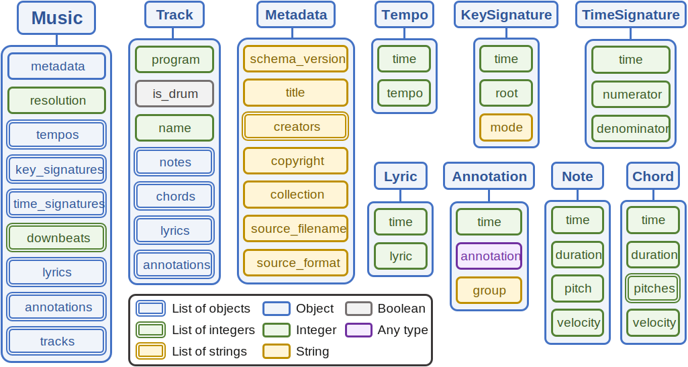

MusPy Classes¶
MusPy provides several classes for working with symbolic music. Here is an illustration of the relations between different MusPy classes.
Base Class¶
All MusPy classes inherit from the muspy.Base class. A muspy.Base object supports the following operations.
muspy.Base.to_ordered_dict(): convert the content into an ordered dictionarymuspy.Base.from_dict()(class method): create a MusPy object of a certain classmuspy.Base.print(): show the content in a YAML-like formatmuspy.Base.validate(): validate the data stored in an objectmuspy.Base.is_valid(): return a boolean indicating if the stored data is validmuspy.Base.adjust_time(): adjust the timing of an object
ComplexBase Class¶
MusPy classes that contains list attributes also inherit from the muspy.ComplexBase class. A muspy.ComplexBase object supports the following operations.
muspy.ComplexBase.append(): append an object to the corresponding listmuspy.ComplexBase.remove_invalid(): remove invalid items from the listsmuspy.ComplexBase.sort(): sort the listsmuspy.ComplexBase.remove_duplicate(): remove duplicate items from the lists
Detailed Documentation¶
-
class
muspy.Base(**kwargs)[source] The base class of MusPy objects.
It provides the following features.
Intuitive and meaningful __repr__ in the form of class_name(attr_1=value_1, attr_2=value_2,…).
Method from_dict: Instantiate an object whose attributes and the the corresponding values are given as a dictionary.
Method to_ordered_dict: Returns the object as an OrderedDict.
Method validate_type: Raise TypeError if any attribute of the object is of the wrong type according to _attributes (see Notes).
Method validate: Raise TypeError or ValueError if any attribute of the object is of the wrong type according to _attributes (see Notes) or having an invalid value.
Method is_valid_type: Return True if each attribute of the object is of the correct type according to _attributes (see Notes).
Method is_valid: Return True if each attribute of the object is of the correct type according to _attributes (see Notes) and having a valid value.
Method adjust_time: Adjust the timing of time-stamped objects. For example, if tempo is an instance of the
muspy.Tempoclass and func is a callable, then calling tempo.adjust_time(func) leads to tempo.time = func(tempo.time).
Notes
This is the base class for MusPy objects. To add a new class, please inherit from this class and set the following class variables properly.
_attributes: An OrderedDict with all the attributes (both required and optional ones) of the object as keys and their types as values.
_optional_attributes: A list containing optional attributes. An attribute in this list is allowed to be None.
_list_attributes: A list containing attributes that are lists.
-
class
muspy.ComplexBase(**kwargs)[source] A base class that supports operations on list attributes.
The supported operations are
Method remove_invalid: Remove invalid items from list attributes.
Method append: Automatically append the object to the corresponding list. For example, if track is an instance of the
muspy.Trackclass and note is an instance of themuspy.Noteclass, then calling track.append(note) leads to track.notes.append(note).Method sort: Sort the time-stamped objects with respect to the time attribute. For example, if track is an instance of the
muspy.Trackclass, then calling track.sort() leads to track.notes.sort(lambda x: x.time).